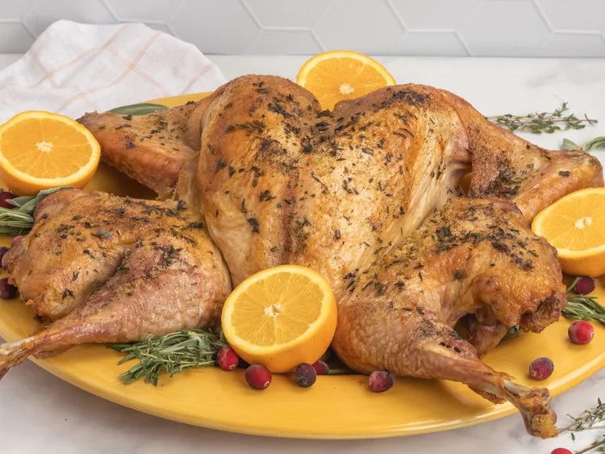

When you spatchcock a turkey you get the juiciest, crispiest roast turkey cooked in a fraction of the time it usually takes to cook a whole turkey. If you've never tried it, spatchcocking is easier than you might think! By removing the backbone and flattening out the bird, you'll reduce cooking time and make carving a whole lot easier, too! Once you try it, you might never go back.